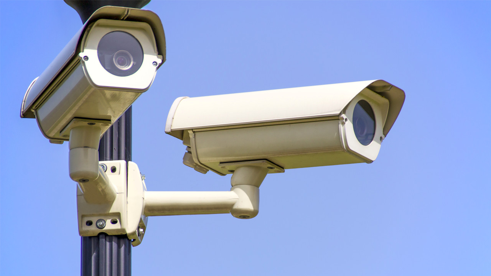

| SUA SEGURANÇA É NOSSA PRIORIDADE (11) 93442-5113 |
|||||
|
Alencartec | Serviços | Segurança | Contato | |
|||||
ServiçosTEMOS UM PRODUTO ESPECÍFICO PARA VOCÊ QUE TEM SEU COLÉGIO INSTALE O SISTEMA DE SEGURANÇA EM COMODATO, NÃO PAGUE INSTALAÇÃO, SEM CUSTO DE MANUTENÇÃO E COM SUPORTE TÉCNICO 24HRS, AGENDE UMA VISITA SEM COMPROMISSO QUE IREMOS NO SEU ESTABELECIMENTO PARA ESCLARECIMENTOS E APRESENTAÇÃO DO SISTEMA. | |||||
|
| |||||
Serviço de segurança remotaServiço de segurança remota Sensores de presença contra roubo, intrusão e/ou incêndio; Botões de pânico; Central de monitoramento de alarme 24 horas; Cercas elétricas, concertinas e sensores ativos; Sistemas de Câmeras (CFTV); Projeto, instalação e integração de câmeras de monitoramento (CFTV); Serviço de monitoramento de vídeos personalizados: guaritas, portarias, salas de segurança, abertura/fechamento de empresas, etc; |  | ||||
|
INTELIGENCIA É NOSSA PALAVRA CHAVE
| SOBRE A EMPRESAUm jeito diferente de fazer segurança. A ALENCARTEC é formada por pessoas como você, que acreditam na importância de um ambiente tranquilo e seguro para viver e trabalhar. Há mais de 05 anos no mercado, nos dedicamos ao aprimoramento do gerenciamento humano e dos processos de nossa equipe, além de atualização constante em tecnologia, para oferecer a nossos clientes a melhor e mais eficiente prestação de serviços. Mas tão importante quanto tudo isso, é a nossa visão de que “nenhum homem é uma ilha”, de que pouco adianta nos trancarmos em fortalezas cada vez mais intransponíveis, se não zelarmos pela estabilidade e melhoria das condições sociais do nosso entorno. |
Desenvolvido por :Eduardo de Alencar MaiaRa:17972 E Vinicius Oliveira de Moraes Ra:17973 |
|||